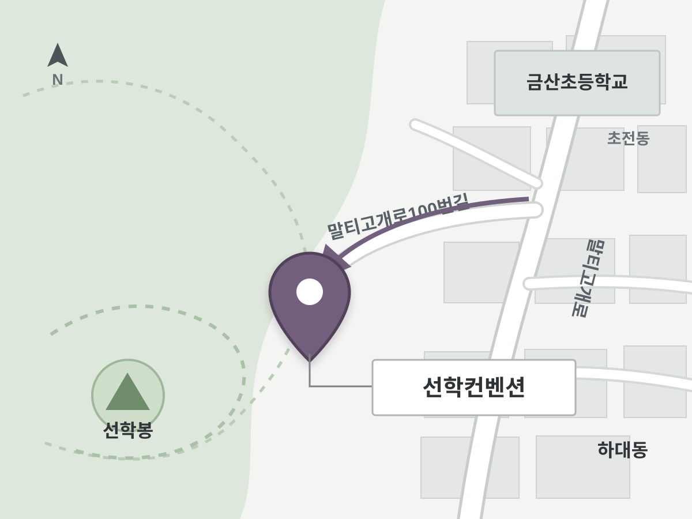

선학컨벤션 약도
도로명: 경상남도 진주시 말티고개로100번길 16-5
지번 검색: 진주시 하대동 674-1번지
하대동에서 말티고개로를 따라 이동한 뒤 선학산 방향의 말티고개로100번길로 진입합니다. 현재 지도에는 도로명 주소로 등록되어 있습니다.
도로명: 경상남도 진주시 말티고개로100번길 16-5
지번 검색: 진주시 하대동 674-1번지
하대동에서 말티고개로를 따라 이동한 뒤 선학산 방향의 말티고개로100번길로 진입합니다. 현재 지도에는 도로명 주소로 등록되어 있습니다.
